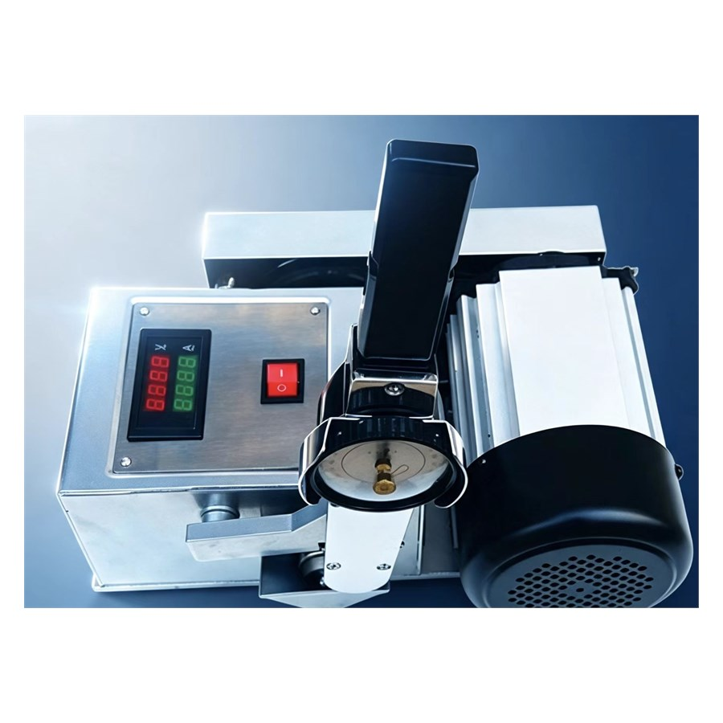

| Model | Timken OK Load Tester (Dual Display) |
|---|---|
| Test Method | Timken OK Load (ASTM D2782 / ASTM D2509) |
| Display | Dual digital LED displays for test parameters |
| Power Supply | AC 220 V, 50 Hz |
| Loading | Step weights on long lever arm |
| Friction Type | Block-on-Ring (ring rotates against fixed block) |
| Body | Brushed stainless steel cabinet |
| Result | OK load value — highest weight passed without scoring |
Rank oils by OK load value — a single number customers understand.
Load-carrying capacity checks of lubricating greases per ASTM D2509.
Show OK value improvement before and after additive dosing.
Clear, repeatable film-rupture demos for sales and training.
Buy straight from the manufacturer. Competitive wholesale pricing for distributors, labs and bulk orders — OEM labeling available.
Designed and tested against ASTM, GB/T, SH/T and ISO methods for reliable, repeatable oil product quality assurance.
Export-grade wooden case packaging with worldwide delivery via air / sea freight. Sample units ship within 3–5 business days.
Operation manuals, test videos and remote engineering support for the entire product lifecycle from our technical team.